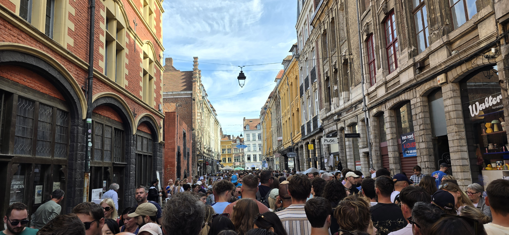

La Braderie de Lille: the complete guide
Every first weekend of September, Lille changes character. Shop windows disappear behind stalls stretching as far as you can see, residents drag their old treasures onto the pavement, and the whole city becomes one enormous open-air market. This is the Braderie de Lille, a tradition several centuries old that now draws more than two million people.

A bit of history
The tradition goes back to the Middle Ages. Servants in Lille were allowed, once a year, to sell their masters' old clothes in the street. The word "braderie" comes from the Flemish braaden, meaning to roast: back then, tavern keepers grilled meat in the street to feed the browsers. Century after century, that local habit turned into the largest flea market in Europe.
When it happens
Always the first weekend of September, from Saturday morning to Sunday evening. The next edition will fall in early September 2027. The exact dates are confirmed by the city in spring.
The hours barely change from year to year: it opens at 8am on Saturday and runs non-stop until midnight, then 8am to 6pm on Sunday. Entry is free.
For the record, the 2026 edition was held on 5 and 6 September.
Where to go depending on what you're after
With over 100 km of stalls and around 10,000 sellers, it helps to know where you're heading rather than wandering at random:
- Vieux-Lille, boulevards Louis XIV and de la Liberté: this is antiques territory. Plenty of British dealers between rue de la Porte de Roubaix and rue de l'Opéra.
- Wazemmes: second-hand clothes and vintage, in a more down-to-earth and livelier atmosphere.
- Rue de Béthune: general bric-a-brac, for rummaging with no particular plan.
A weekend itinerary that won't wear you out
The Braderie covers Vieux-Lille, the city centre and the Wazemmes-Gambetta area. You can't see it all in one go. Here's a run-through that works well:
- Saturday morning: Vieux-Lille and the Grand'Place right at opening, before the crowd settles in.
- Saturday afternoon: this is the peak. A good moment to take a break at the Palais des Beaux-Arts or in the Citadelle park.
- Saturday late afternoon: get back to browsing, the crowd starts to thin.
- Sunday morning: head to Wazemmes, then a last loop through the centre before it closes at 6pm.
The mussels-and-fries tradition
You can't talk about the Braderie without talking about mussels and fries. All weekend, restaurants and estaminets put their tables out on the pavement and serve mountains of mussels, in cream or white wine. Some pile the empty shells up outside their door to show how many they've got through. It has turned into a friendly competition between them.
Getting there and getting around
- By train: Lille-Flandres and Lille-Europe take TGV, regional trains and Eurostar. From Paris, Brussels or London it's straightforward.
- By metro: lines 1 and 2 serve the centre.
- By car: all public car parks in the centre close for safety reasons. The city opens thirteen park-and-rides on the outskirts, available around the clock over the weekend and linked to the centre by public transport.
- Traffic and parking are banned across the whole area, from Friday evening until early Monday morning.
With over two million visitors, central hotels fill up months ahead and prices climb a long way for that weekend. If you're coming for the Braderie, book as soon as your dates are set. Otherwise, stay a little outside the centre and come in by metro.
A few tips if you're coming from abroad
- Bring cash: many sellers haggle more willingly in cash, and some small stalls don't take cards.
- Wear comfortable shoes: with dozens of kilometres of stalls, you'll be walking all day.
- Book your accommodation early, see just above.
- Keep an eye on your things: as in any large crowd, watch your phone and wallet.
Quick reference
- Next edition
- First weekend of September 2027
- Usual hours
- Sat 8am–midnight / Sun 8am–6pm
- Entry
- Free
- Area
- Vieux-Lille, city centre, Wazemmes/Gambetta
- Getting there
- Lille-Flandres / Lille-Europe stations, metro lines 1 & 2